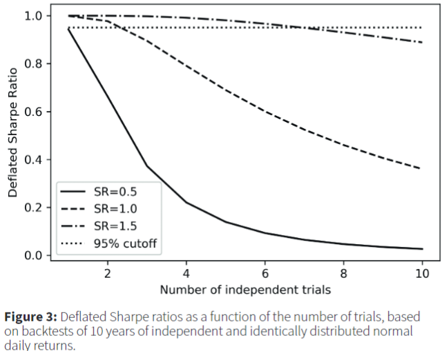

Finance
Misc
- OpenBB - Open source bloomberg terminal (overview article)
- Free data and seemingly hundreds of different tools including some decent forecast methods.
- Beware of survivorship bias when backtesting algorithms
- Example: S&P 500
- A trader is creating an algorithm to predict prices of all the stocks in the S&P 500. If the trader uses the current roster of companies, the list only includes companies that have made it to now without shutting down or losing so much value they drop off the list. The trader should use the list of companies as it was at the start of the training data.
- Example: S&P 500
- 435 choices for start and end dates of each monthly investment cycle
- i.e. Easy to have a selective endpoints fallacy for an investment strategy.
- Strategies
- Hedgefund - factor rotations (longer term)
- Something about futures - factor tilts (shorter term)
- Resources - Advances in Financial Machine Learning - de Prado (R >> Documents >> Financial)
- Misleading chart (Thread)

- No transaction costs
- No fees
- No taxes
- US “exceptionalism”
- Overlapping time period analysis
- Example: if I look at 1920-1950 and then 1921-1951, twenty eight of the thirty data points are overlapping. So there’s not a lot of “unique” data in this set.
- Nominal vs real returns - Time weighted vs dollar weighted returns
Terms
- Basis Point - 1/100th of a percentage point
- Basis Risk - the risk that an asset and a hedge will not move in opposite directions as expected; “basis” refers to the discrepancy.
- Capital expenditure (CapEx) - money that is spent to acquire, repair, update, or improve a fixed company asset, such as a building, business, or equipment. For assets to fall under the CapEx destination, the investments must have a useful life of one year or more. A CapEx is amortized, or its value is deducted a little each year based on the total cost and its expected useful life.
- Useful life refers to the estimated and generally agreed upon shelf life of a specific business asset.
- According the IRS, Car’s useful life is 5yrs and new building’s is 39yrs
- Also see What Is a Capital Expenditure (CapEx)? Definition and Guide (example, calculations, relation to operating expenditure (OpEx)
- Useful life refers to the estimated and generally agreed upon shelf life of a specific business asset.
- Cost of Carry or Carrying Charge - the cost of holding a security or a physical commodity over a period of time. The carrying charge includes insurance, storage and interest on the invested funds as well as other incidental costs
- For a stock, it’s is the opportunity cost of the capital that goes into it plus the risk you take on for holding it (this is what the idea of risk neutral valuation is based on).
- Derivatives are securities that move in correspondence to one or more underlying assets. They include options, swaps, futures and forward contracts. The underlying assets can be stocks, bonds, commodities, currencies, indices or interest rates. Derivatives can be effective hedges against their underlying assets, since the relationship between the two is more or less clearly defined (if they’re negatively correlated? Or maybe if the underlying asset goes down, there’s a lag between the asset going down and the derivative going down. Therefore, you can sell the derivative before it goes down. Thus, hedging your risk). Knowing the value of an underlying asset helps traders determine the appropriate action (buy, sell, or hold) with their derivative.
- Exchange Traded Fund (ETF) - A mutual fund that may be traded daily like a stock or bond.
- False Strategy Theorem - Gives the threshold for which a Sharpe Ratio would be significant.
- Given a sample of estimated performance statistics (e.g. sharpe ratios), {Sk} for k = 1, …, K, where each S ∈ N(0, 1) \[
\mathbb{E}[\max_{k} {S_k}] \approx (1-\gamma) Z^{-1} [1-\frac{1}{K}] + \gamma Z^{-1} {1 - \frac{1}{Ke}}
\]
- Z-1 is the inverse of the standard Gaussian cdf
- e is the exponential constant (i.e. 2.71…)
- γ is the Euler-Mascheroni constant (approx. 0.5772156649…)
- Useful for backtesting multiple strategies and deciding whether the strategy with the maximum sharpe ratio is significant (mitigates multiple testing bias)
- Given a sample of estimated performance statistics (e.g. sharpe ratios), {Sk} for k = 1, …, K, where each S ∈ N(0, 1) \[
\mathbb{E}[\max_{k} {S_k}] \approx (1-\gamma) Z^{-1} [1-\frac{1}{K}] + \gamma Z^{-1} {1 - \frac{1}{Ke}}
\]
- Futures are an obligation to the buyer and a seller. The seller of the future agrees to provide the underlying asset at expiry, and the buyer of the contract agrees to buy the underlying at expiry. The price they receive and pay, respectively, is the price they entered the futures contract at. Most futures traders close out their positions prior to expiration since retail traders and hedge funds have little need to take physical possession of barrels of oil, for example. But, they can buy or sell the contract at one price, and if it moves favorably they can exit the trade and make a profit that way. Futures are a derivative because the price of an oil futures contract is based on the price movement of oil, for example.
- Hedge - an investment that is made with the intention of reducing the risk of adverse price movements in an asset. Normally, a hedge consists of taking an offsetting or opposite position in a related security. An example could be investing in both cyclical and counter-cyclical stocks.
- Hedge Ratio (delta) - The effectiveness of a derivative hedge, delta, is the amount the price of a derivative moves per $1 movement in the price of the underlying asset.
- Leg - one part or one side of a multistep trade. Legs should be exercised at the same time in order to avoid any risks associated with fluctuations in the price of the related security. So a purchase and sale should be made around the same time to avoid any price risk. Strategy often associated with derivatives trading.
- Limited Liability Corporation (LLC) - A corporation is a business organization that issues stock to its shareholders. A limited liability company is a business organization composed of members with membership interests. a type of legal entity that can be used when forming a business that offers protection to the owner(s) from personal liability for debts and other obligations that a business might incur. In other words, the personal assets of the owner cannot be used for legal claims against the business.The differences don’t really matter much at the taxation or day-to-day corporate level except in scale: LLCs tend to be smaller than corporations (more or less; a lot of people form small business corporations for good reasons and ignorant ones). (See Differences between a LLC and S Corp)
- Market Capitalization - the total dollar market value of a company’s outstanding shares. Calculated by multiplying the total number of a company’s shares by the current market price of one share.
- Market Momentum - measure of overall market sentiment that can support buying and selling with and against market trends. In general, Momentum = Today’s price - Price from X days ago. Positive: bullish, Negative: bearish. More sophisticated indicators can be calculated, see https://www.investopedia.com/terms/m/marketmomentum.asp#:~
- Options - an option on stock XYZ gives the holder the right to buy or sell XYZ at the strike price up until expiration. The underlying asset for the option is the stock of XYZ. The writer must either buy or sell the underlying asset to the buyer on the specified date at the agreed-upon price. The buyer is not obligated to purchase the underlying asset, but they can exercise their right if they choose to do so. If the option is about to expire, and the underlying asset has not moved favorably enough to make exercising the option worthwhile, the buyer can let the expire and they will lose the amount they paid for the option.
- Put option - if Morty buys 100 shares of Stock plc (STOCK) at $10 per share, he might hedge his investment by buying an American put option with a strike price of $8 expiring in one year. This option gives Morty the right to sell 100 shares of STOCK for $8 any time in the next year. Let’s assume he pays $1 for the option, or $100 in premium. If one year later STOCK is trading at $12, Morty will not exercise the option and will be out $100. He’s unlikely to fret, though, since his unrealized gain is $100 ($100 including the price of the put). If STOCK is trading at $0, on the other hand, Morty will exercise the option and sell his shares for $8, for a loss of $300 ($300 including the price of the put). Without the option, he stood to lose his entire investment.
- Call options - contract giving the owner the right, but not the obligation, to buy a specified amount of an underlying security at a specified price within a specified time. The specified price is known as the strike price and the specified time during which a sale is made is its expiration (expiry) or time to maturity. As the price of the stock goes up, the value of the call option contract goes up. The contract can be sold at any time or you can purchase the stock at the guaranteed price on the expiration date. The price of the call option is called the premium.
- If Apple is trading at $110 at expiry (aka expiration date), the strike price is $100, and the options cost the buyer $2, the profit is $110 - ($100 +$2) = $8. If the buyer bought one contract that equates to $800 ($8 x 100 shares), or $1,600 if they bought two contracts ($8 x 200). If at expiry Apple is below $100, then the option buyer loses $200 ($2 x 100 shares) for each contract they bought.
- Suppose that Microsoft shares are trading at $108 per share. You own 100 shares of the stock and want to generate an income above and beyond the stock’s dividend. You also believe that shares are unlikely to rise above $115.00 per share over the next month. You take a look at the call options for the following month and see that there’s a 115.00 call trading at $0.37 per contract. So, you sell one call option and collect the $37 premium ($0.37 x 100 shares), representing a roughly four percent annualized income. If the stock rises above $115.00, the option buyer will exercise the option and you will have to deliver the 100 shares of stock at $115.00 per share. You still generated a profit of $7.00 per share, but you will have missed out on any upside above $115.00. If the stock doesn’t rise above $115.00, you keep the shares and the $37 in premium income.
- Outstanding Shares - the number of stocks that a company has issued. This number represents all the shares that can be bought and sold by the public, as well as all the restricted shares that require special permission before being transacted.
- Relative Performance - the price ratio of two stocks
- Sharpe Ratio (annualized) - measures the performance of an asset relative to violitility (i.e. riskiness)
- (expected excess returns relative to a risk free asset (e.g. treasury bond) / sd of those expected excess returns) * √number_of_observations_in_a_year
- Sharpe ratios above 1.0 are generally considered “good,” as this would suggest that the portfolio is offering excess returns relative to its volatility
- Even if your sharpe ratio is above 1 it may not be good if it is below the average sharpe ratio of peer group portfolios.
- Multiplying by √number_of_observations_in_a_year makes “annualizes” the sharpe ratio and makes sharpe ratios comparable
- Should NOT be thought of as t-stats for testing significance of the sample mean (i.e. p-values for estimates) since it doesn’t account for the number of observations
- See Sharpe Ratio (deflated)
- Investment professionals often use a rule of thumb of dividing the sharpe ratio by 2 when backtesting to avoid overfitting, there is no statistical basis for this.
- Sharpe Ratio (probabilistic) - allows you test the significance of the Sharpe Ratio under assumptions of ergodicity and stationarity (Paper)
- Sharpe Ratio (deflated) - the probability that an observed Sharpe Ratio was drawn from a distribution with positive mean after controlling for sample size (aka backtest length), skewness, kurtosis, and number of strategy variations explored.
Combines probabilistic sharpe ratio and false strategy theorem
Paper: The Deflated Sharpe Ratio: Correcting for selection bias, backtest overfitting and non-normality

- Shows that if a strategy has a maximum sharpe ratio of 1 but had 3 variations backtested, it’s deflated sharpe ratio drops below the 95% CI for a sharpe ratio = 1.
Returns from investment strategies often exhibit autocorrelation, fat tails, and negative skewness which further “deflates” the deflated sharpe ratio
- Spread (Bid-Ask): the difference between two prices, rates or yields. - the gap between the bid and the ask prices of a security or asset, like a stock, bond or commodity. - the gap between a short position (that is, selling) in one futures contract or currency and a long position (that is, buying) in another. This is officially known as a spread trade
- Volatility:
- Parkinson Range (PR) = ln(closing_price) - ln(opening_price)
- Yield a return measure for an investment over a set period of time, expressed as a percentage.
- Includes price increases as well as any dividends paid, calculated as the net realized return divided by the principal amount (i.e. amount invested).
- Higher yields are perceived to be an indicator of lower risk and higher income, but a high yield may not always be a positive, such as the case of a rising dividend yield due to a falling stock price.
60/40 Portfolio Strategy
- Misc
- {{QSTrader}}
- Notes from - The 60/40 Benchmark Portfolio
- Description
- 60/40 US Equities/Bonds strategy is a simple long-term investment approach that is widely utilised in the investment industry. It seeks to ensure that at any point during the lifetime of the investment that 60% of account equity is invested in one or more assets representing a broad selection of US equities (such as an S&P500 ETF), while 40% of account equity is invested in one or more assets representing a broad selection of US treasury bonds (such as a treasury bond ETF).
- Since the actual percentage allocations of each asset class can deviate over time due to relative growth of the respective assets a ‘rebalance’ approach is often carried out. This means that trades are issued on a relatively infrequent basis to buy/sell amounts of each asset class to periodically bring the account equity allocations back into the 60/40 split. For the particular strategy implemented here we are using an end of month rebalance frequency.
Momentum Tactical Asset Allocation Strategy
- Misc
- {{QSTrader}}
- Notes from
- Description
- The US sector momentum strategy is a long-only dynamic tactical asset allocation strategy that attempts to exceed the performance of simply going long the S&P500.
- At the end of every month the strategy calculates the holding period return (HPR) based momentum of all of the SPDR sector ETFs (the ticker symbols of which begin with the prefix XL) and selects the top N to invest in for the forthcoming month, where N is usually between 3 and 6.
- In the implementation given here the HPR momentum is calculated over the previous 126 days (approximately six months of business days) and the top three sector ETFs are chosen for the portfolio. The portfolio allocation is equally weighted between each of these three sector ETFs. Irrespective of changes in signal the portfolio is rebalanced once per month to weight the assets equally.
Volatility Targeting Portfolio
- Misc
- Volatility targeting seeks to counter the fluctuations in volatility:
- It leads to leveraging a portfolio at times of low volatility, and scaling down exposures at times of high volatility.
- This approach targets a constant level of volatility, rather than a constant notional exposure.
- Volatility clustering is a key feature of financial asset returns:
- High volatility over the recent past tends to be followed by high volatility in the near future.
- Impact on Sharpe ratio
- Volatility targeting improves the Sharpe ratio of "risk assets" (equities and credit), and that of "balanced" and "risk parity" portfolios that have a substantial allocation to these risk assets.
- For equity and credit, volatility targeting effectively introduces some momentum overlay due to the so-called leverage effect: the negative relationship between returns and changes in volatility.
- In contrast, for bonds, currencies, and commodities the impact on the Sharpe ratio is negligible.
- Impact on likelihood of tail events
- Volatility targeting reduces the likelihood of extreme returns for all asset classes.
- Importantly, "left-tail" events tend to be less severe, as they typically occur at times of elevated volatility, when a target-volatility portfolio has a scaled-down notional exposure.
Mean Reversion Strategy or Pairs Trading
- Match two trading vehicles that are highly correlated, trading one long and the other short when the pair’s price ratio diverges “x” number of standard deviations - “x” is optimized using historical data. If the pair reverts to its mean trend, a profit is made on one or both of the positions.
- Chart relative performance (price ratio)
- The center white line represents the mean price ratio over the past two years. The yellow and red lines represent one and two standard deviations from the mean ratio, respectively.
- The potential for profit can be identified when the price ratio hits its first or second deviation. When these profitable divergences occur it is time to take a long position in the underperformer and a short position in the overachiever. (i.e. shorting the stock that’s rising in relation to the other, and buying the other stock that hasn’t risen yet)
- The revenue from the short sale can help cover the cost of the long position, making the pairs trade inexpensive to put on.
- Position size of the pair should be matched by dollar value rather than number of shares; this way a 5% move in one equals a 5% move in the other.
- As with all investments, there is a risk that the trades could move into the red, so it is important to determine optimized stop-loss points before implementing the pairs trade.
- Chart spreads between returns
- Look for stocks that move closely together and their:
- Spreads zig-zag around zero
- Prices separately (marginally) are normally distributed and joint-normally distributed (assumes linear correlation)
- If both, then they move up AND down together (symmetric)
- If only marginally, then they probably only move in one direction together (asymmetric)
- If your two assets returns (differenced prices are stationary) do not correlate within a [0.7..0.8] correlation coefficient range at least 70% of the times (70% of all observations) then you’re probably dealing with a very bad hedging instrument
- Look to cover the remaining data points and research why correlations broke down during those periods. If you can derive a mathematical relationship you could possibly formulate an approach in which you make adjustments to the hedge ratio through an adjustment in your beta/correlation coefficient.
- Figure out the optimal time interval to retrain model due to data drift
- Rolling 20-day correlation is a common way to monitor stock correlation
- Copulas
- See Association, Copulas
- Measures non-linear association
- For Value-at-Risk (VAR) calculations, Gaussian copula is overly optimistic and Gumbel is too pessimistic
- Copulas with upper tail dependence: Gumbel, Joe, N13, N14, Student-t.
- Copulas with lower tail dependence: Clayton, N14 (weaker than upper tail), Student-t.
- Copulas with no tail dependence: Gaussian, Frank.
- Cointegration allows us to construct a stationary time series from two asset price series, if only we can find the magic weight, or more formally, the cointegration coefficient β. Then we can apply a mean-reversion strategy to trade both assets at the same time weighted by β. There is no guarantee that such β always exists, and you should look for other asset pairs if no such β can be found.
- See Forecasting, Statistical >> Terms
- Cointegrated assets share common nonstationary components, which may include trend, seasonal, and stochastic parts
- Might have low correlation, and highly correlated series might not be cointegrated at all.
- Describes a long-term relationship between the prices (correlation describes a short-term relationship between the returns). The resulting stationary series is the spread between the prices of both assets
- Should have similar risk exposure so that their prices move together
- Good candidates for cointegrated pairs could be:
- Stocks that belong to the same sector.
- WTI crude oil and Brent crude oil.
- AUD/USD and NZD/USD.
- Yield curves and futures calendar spreads